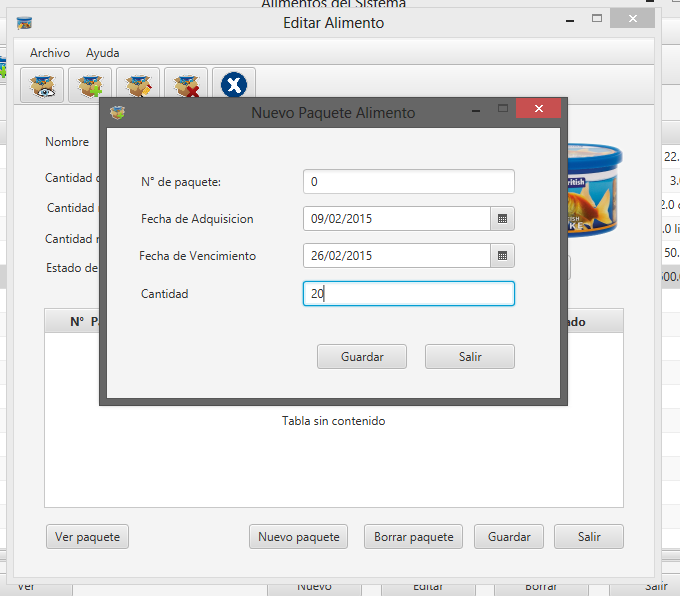

Todos los recursos del sistema se manejan por LOTES o PAQUETES, la carga de nuevas unidades recibe el nombre de "ALTA DE PAQUETE", y a continuación se detalla para el recurso Alimento:
Primero, desde la pantalla principal de Alimentos, deberá seleccionar el alimento a cargar un nuevo paquete, y presionar la primera opción de la caja de herramientas,, para ver la información asociada.
Una vez dentro de la información, deberá hacer doble click sobre la lista de paquetes cargados, para dar de alta un nuevo paquete.
Se desplegará una pantalla similar a la siguiente, para la carga de los datos del nuevo paquete de alimento:

Para el o los nuevos paquetes deberá indicar, cantidad de unidades adquiridas, gramos para cada una, fecha de adquisición y fecha de vencimiento del producto, considerando que de existir más de una fecha de vencimiento entre las unidades cargadas se tomará aquella que se encuentre más próxima para registrar al lote.
Deberá seleccionar AGREGAR, para cargar el nuevo lote, o CANCELAR para descartar los cambios.
Los datos del nuevo lote aparecerán cargados en la pantalla "Ver alimento...", que se mostró anteriormente.
Created with the Personal Edition of HelpNDoc: Free Kindle producer